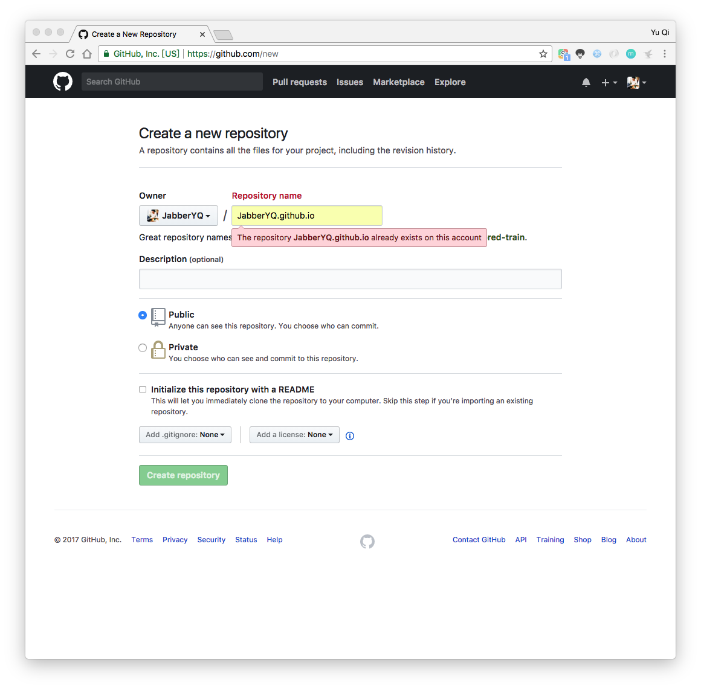
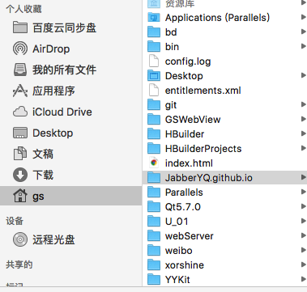
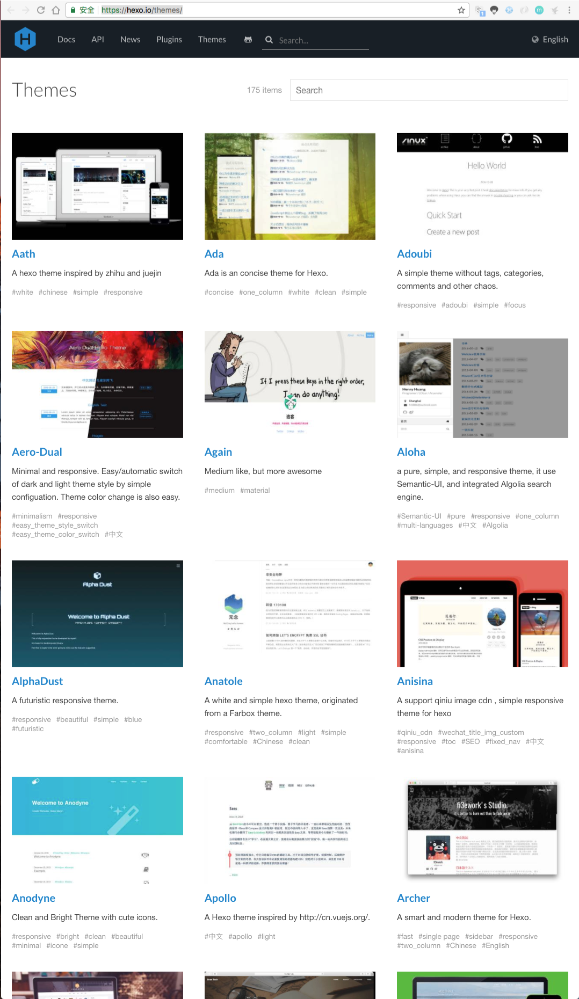
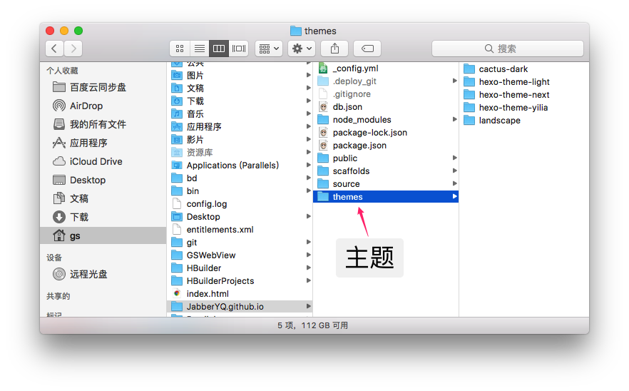
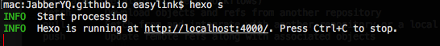

一、准备工作
GitHub账号
首先，需要一个GitHub账号，然后在主页点击New repository按钮，创建一个仓库。
你可以取名为你的名字.github.io。当然，我这里已经创了一个了，所以会提示这个名字已经存在。
取完名字，点击Create repository按钮，即可。
环境
Node.js和Git
安装 Hexo 相当简单。然而在安装前，必须检查电脑中是否已安装下列应用程序：
- Node.js：Node.js下载地址
- Git：使用命令行
$ brew install git安装或者 点击这里安装程序
更多：
- 查看当前node版本号：
$ node -v - 清除node.js的cache：
$ sudo npm cache clean -f - 安装n，用来管理node版本：
$ sudo npm install -g n 安装最新版本node：
$ sudo n stable查看当前git版本号：
$ git --version
安装 Hexo
所有必备的应用程序安装完成后，即可使用 npm 安装 Hexo。$ npm install -g hexo-cli
二、创建与配置
创建博客
使用命令行创建博客：$ hexo init 你的名字.github.io 这里我使用的是JabberYQ，我没有试过别的名字，如果你不放心的话，可以和我一样，和在GitHub创建的仓库名字一直就可以了。
完成后，会在你的 /Users/yourname下创建一个你的名字.github.io文件夹。

主题设置
下面需要可以设置你的博客的主题，刚创建的博客默认使用的主题是landscape，可以修改。
修改前，当然是先去获取你喜欢的主题了。主题集合。

在这之前，先要明确，主题都应该放在JabberYQ.github.io/themes目录下。

我这里有两种方法去下载主题：
通过命令行来下载主题
1
2$ cd 你的名字.github.io
$ git clone https://github.com/iissnan/hexo-theme-next themes/next打开
https://github.com/iissnan/hexo-theme-next，使用GitHub Desktop程序，点击Clone or download去clone到JabberYQ.github.io/themes目录下。
完成后，JabberYQ.github.io/themes文件夹内就会多一个hexo-theme-next文件夹，里面就是Next主题了。
博客配置
打开JabberYQ.github.io文件内的_config.yml文件，修改内部参数。1
2
3
4
5
6
7
8
9
10
11
12
13
14
15
16
17title: Jabber_YQ's Blog
subtitle: 不会一切重启不能解决的问题
description:
author: Jabber_YQ
language: zh-Hans
#改为true后，当创建文章后，会自动一并创建一个同名的文件夹当做图片文件夹
post_asset_folder: true
#设置主题
theme: hexo-theme-next
deploy:
type: git
repo: https://github.com/JabberYQ/JabberYQ.github.io.git
#这一行需要自己加，为博客头像，路径为/assets/webImage/avatar.jpg
avatar: /assets/webImage/avatar.jpg
主题配置
下面是主题配置，来设置博客的主题的各种细节。
和博客配置一致，也同样是打开_config.yml文件，修改内部参数。当然，这个文件并不是上面的那个文件，只是名字一致而已。路径：JabberYQ.github.io/themes/hexo-theme-next
修改参数：1
2
3
4
5
6
7
8
9# 网站图标
favicon:
small: /assets/webImage/favicon.png
medium: /assets/webImage/favicon.png
# 打赏
reward_comment: 请我吃一块黄金鸡块
wechatpay: /assets/webImage/wechat_pay.jpg
alipay: /assets/webImage/alipay_pay.jpg
上面只是一部分设置，还有设置分类，设置标签，都是在这里设置。具体设置说明在这里：
具体设置说明在这里
以上的一些说明
上面涉及的图片资源都是来自本地的。我的图片的都存于JabberYQ.github.io/public/assets/webImage 目录下。assets和webImage文件夹都是我自己创建的，你可以随意创建，只要在设置图片参数的时候写对路径即可。注意，只需写public之后的路径。
新建文章
下面开始写一篇文章，同样，也有两种方法创建新文章。
- 使用命令行：
$ hexo new "文章名字"。还记得博客配置里的post_asset_folder属性吗？使用该方法创建的文章，会自动在文章相同的目录下创建一个文章同名文件夹，当你在文章中使用图片，使用即可。（这其实属于Markdown语法了。 其他：Markdown语法备忘录） - 直接创建
文章名字.md文件。无图片文件夹。
注意，你的文章格式应该这样，才能正确的显示时间，标题，分类等。当然如果你不需要这些东西，也可以不设置。1
2
3
4
5
6
7
8
9---
title: iOS进阶：RunLoop入门，看我就够了
tags:
- RunLoop
- iOS 进阶
categories: iOS 进阶
date: 2016-09-25
---
正文正文正文正文正文正文
测试
当你文章写完后，先别急着立马发布，先在本地测试一下吧。$ hexo s

照终端在Chrome输入http://localhost:4000/即可。
发布
当没有问题时，那就发布吧。$ hexo clean && hexo g && hexo d
这需要点时间，但过了这一步，你的文章所有人都能看见。
完成
在Chrome输入https://jabberyq.github.io/来查看你的个人技术博客。